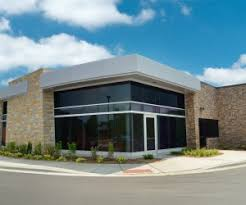
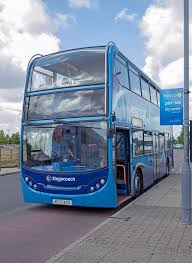
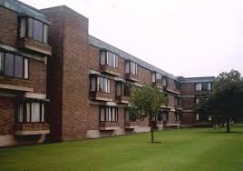
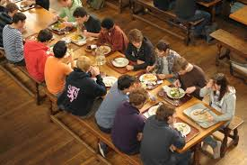

Gymnasium There are two fully equipped Gymnasiums at the Campus.They include saunas and massage facilities as well as all the standard equipment. Professional staff supervises the operation of the facilities and gives guidance to the trainees.
Clinics The university established several clinics in its various locations to provide the best healthcare and medical services to its students, faculty members and staff to ensure smooth running of the educational process. These clinics cover all medical specializations, with best specialists, consultants, nursing staff, and using latest diagnostic and therapeutic equipment.
Bus Transportation The university has a complete fleet of latest models of busses. All the vehicles are fully air-conditioned and are ready for longtrips. Busses transport students between campuses on hourly schedules. Some lines also coverall the city .
Defferent banks Defferent banks are located inside the campus to facilitate bank transactions for the students as well as the employees. It offers full banking services such as money transfers for foreign students.
The university built 3 student hotels within the campus.All the hotels provide 4 stars accommodation along with world class restaurants. Single and double rooms are available. A separate hotel for girls was built on the campus as well. All the hotels are built to the highest standards, and are maintained by professional staff.
Food Services The university provide food services for students, staff, and visitors on campuses. Restaurants and Cafeterias are designed to serve meals and snacks all week days, and provide catering services for special events. The students' residents on campus are served 3 meals daily during their full time stay at the university's hotel. Our objective is to offer wide variety, great service and a quality dining experience.